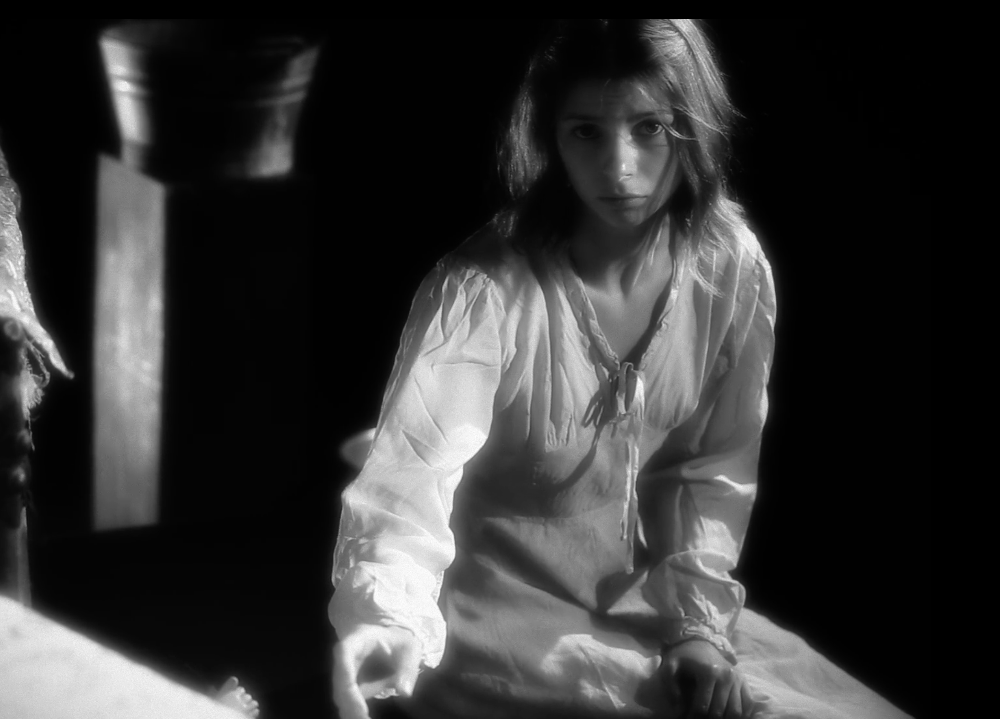
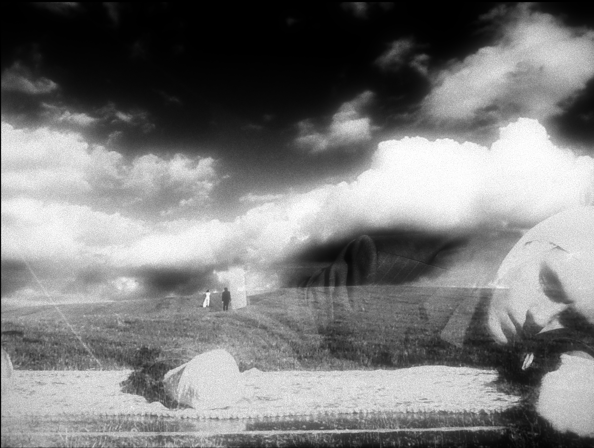
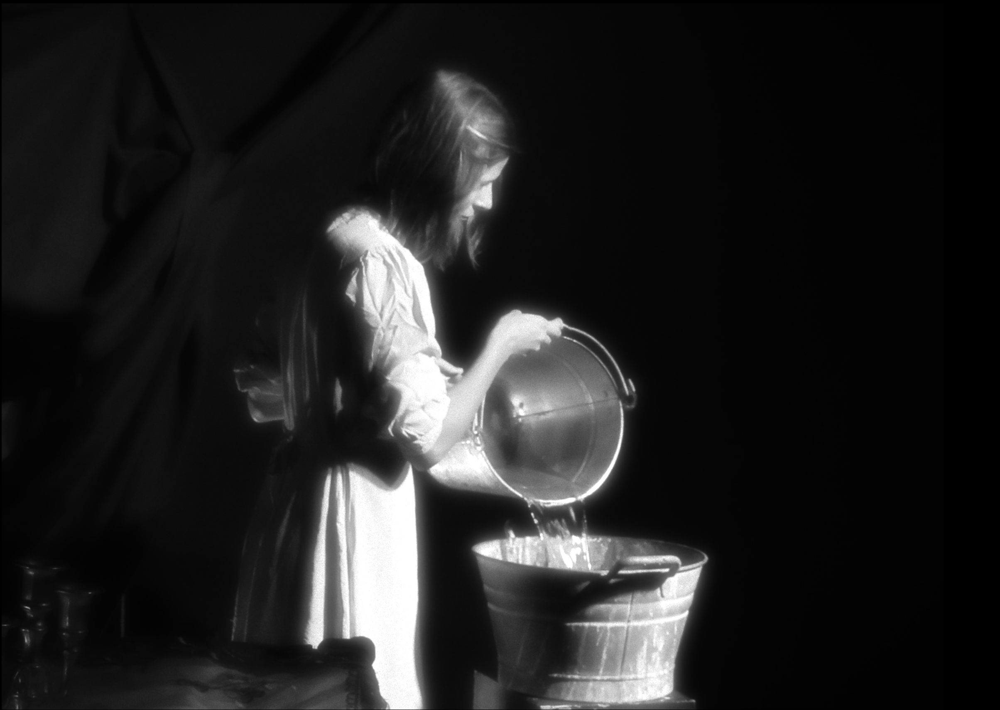
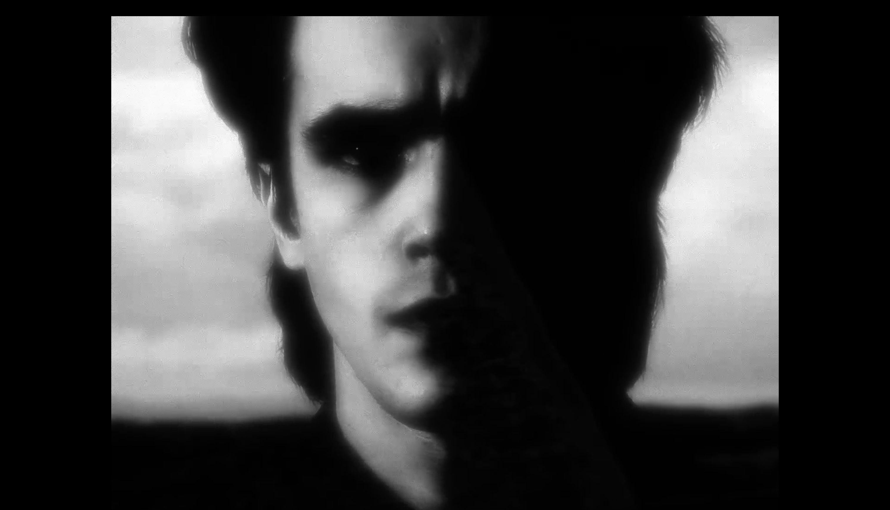
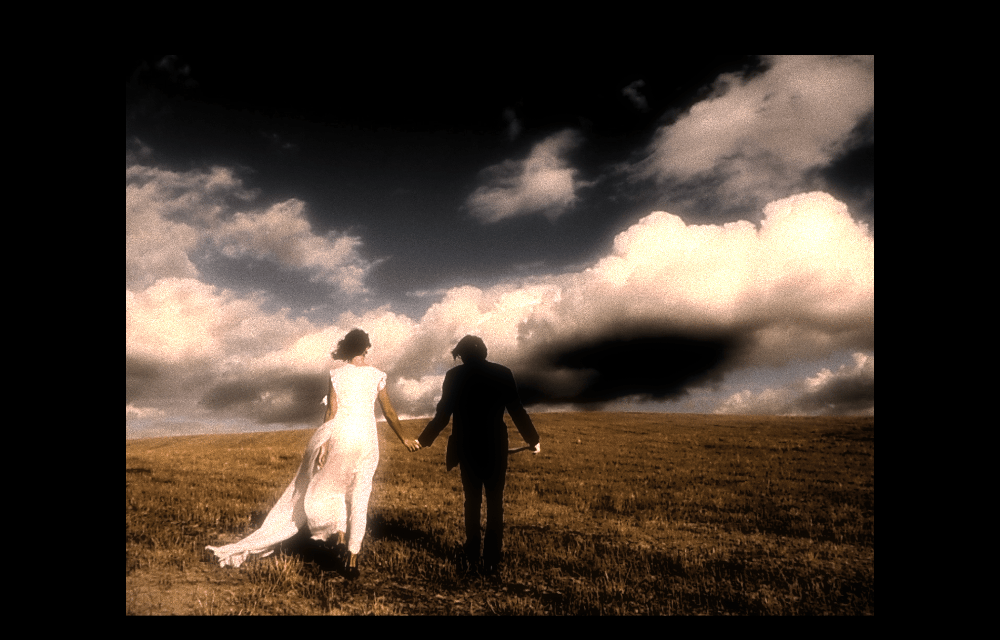
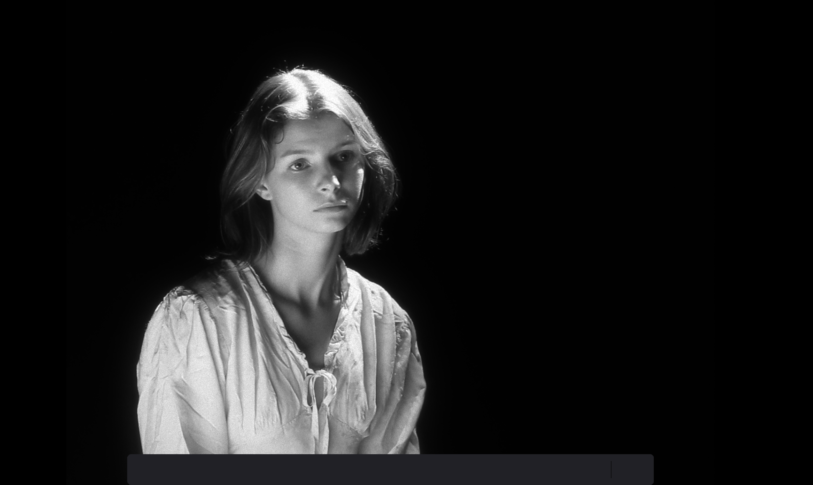

Cortometraggio indipendente che esplora la memoria e il trauma attraverso la lente dell'infanzia.
Il libro dei dolori dell'infanzia è un poema visivo sulla memoria e la misericordia — una veglia senza tempo sospesa tra gelo e tenerezza.
L'opera attraversa la materia come un rito funebre: terra, garza, patate, cenere — reliquie di un mondo infantile che si rifiuta di morire.
La luce è il vero personaggio: blu, tremante, che taglia il buio come una lama che non ferisce ma divide l'aria in due respiri.
Il suono — crepitante, lontano — è quello di una ninna nanna russa dimenticata, come suonata dal grammofono di un sogno.
Non c'è redenzione, solo il tentativo di afferrare la forma del dolore, toccarla senza nominarla, offrirle un corpo attraverso il rituale della fasciatura e della ripetizione.
Ogni gesto è un atto di fede cieca: fasciare, sbucciare, scaldare, osservare.
L'infanzia non è innocenza, ma una ferita luminosa che continua a pulsare in chi resta.
Il libro dei dolori dell'infanzia non racconta una storia — ne evoca una.
È un sogno d'inverno, una liturgia intima dove calore e morte si dissolvono l'uno nell'altra, dove il silenzio dei bambini parla più forte di qualsiasi parola.
Tecnologie
TouchDesigner, Python, OpenGL, Real-time Rendering, WebSockets
Dimensioni
Cortometraggio: 18 minuti
Team
Concept, regia e ruolo del "Ragazzo": Boris Pimenov
Nel ruolo della ragazza: Ksenia Rotar'
Sound design: Grigorij Lavrov





